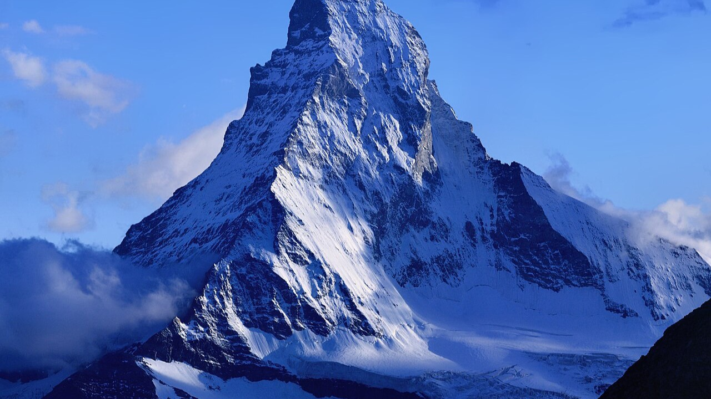
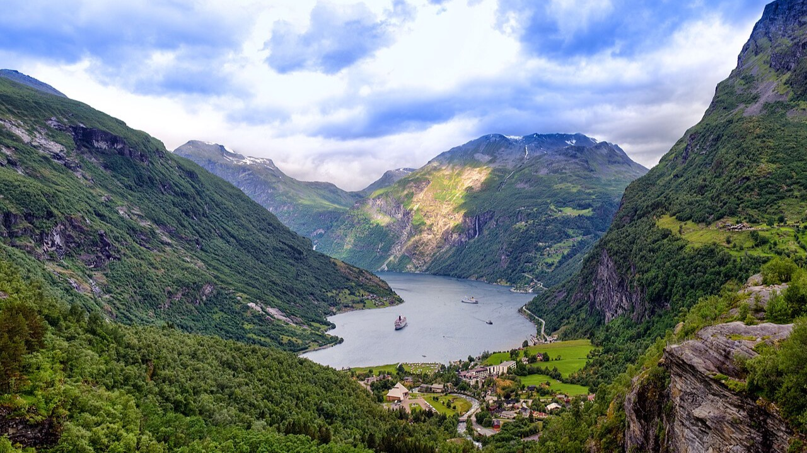
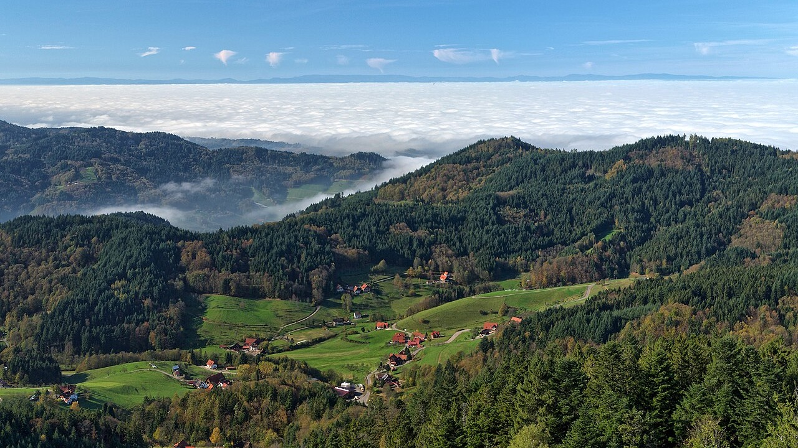

Ecosistemas
Actividad principal, hotel y restaurante recomendados en cada uno
|

Suiza
AlpesCordillera de alta montaña con glaciares, valles verdes y el famoso monte Cervino.
|

Grecia
Costa mediterráneaIslas volcánicas de aguas cristalinas, clima cálido y atardeceres inolvidables.
|
||||||||||||
|

Noruega
FiordosBrazos de mar entre montañas escarpadas, formados por antiguos glaciares.
|

Alemania
Selva NegraBosque montañoso de abetos, cascadas y pueblos tradicionales.
|